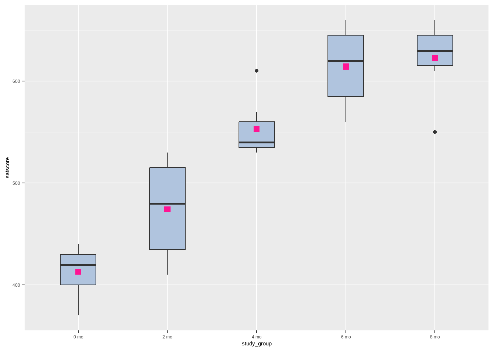
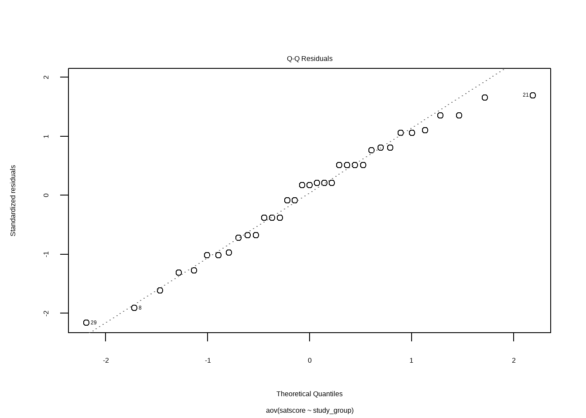
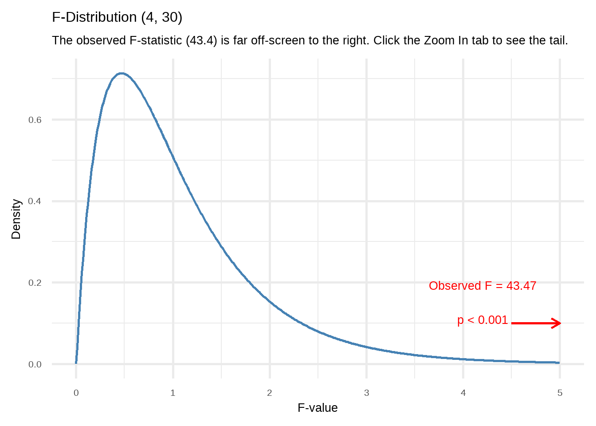
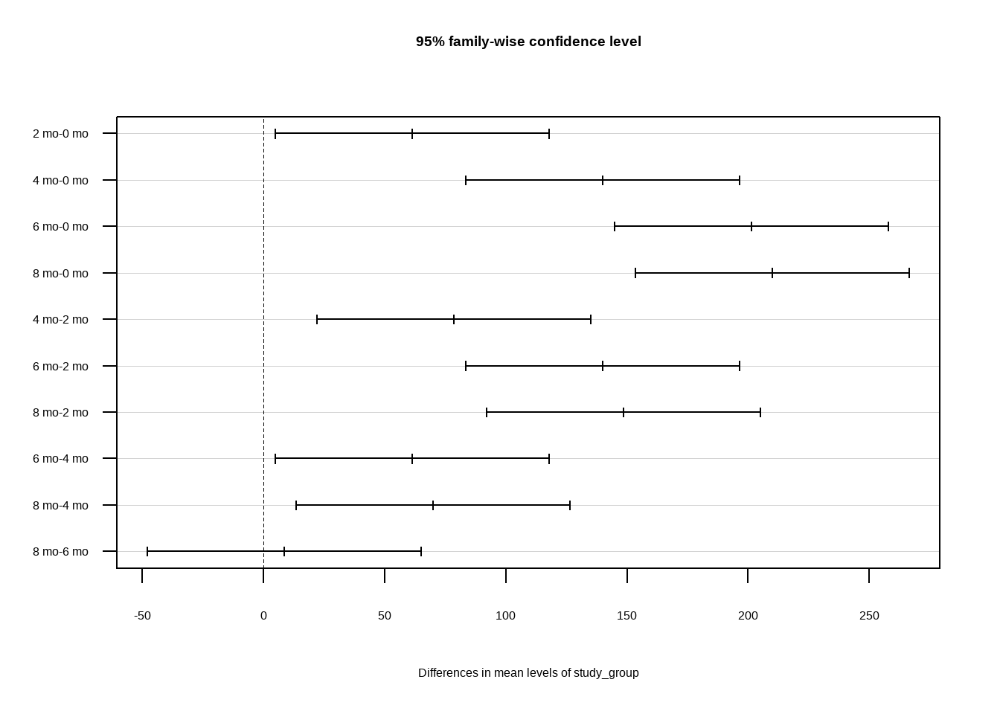

# Required packages for this R script
library(tidyverse)
library(rstatix)
library(dlookr)
library(readxl)4 One-way between-subjects Analysis of Variance (One-way ANOVA) in R
First, we load the following R packages in our R session:
4.1 Introduction
The one-way between-subjects analysis of variance (one-way ANOVA) is used to compare more than two independent (unrelated or unpaired) samples. We may think of it as an extension of Student’s t-test.
Although, ANOVA can detect whether there are mean differences between groups, it does not identify which groups are different from the others. At first, we might consider to compare all groups in pairs with t-tests. However, this approach can lead to incorrect conclusions due to the multiple comparisons problem. Each additional t-test increases the likelihood of making at least one Type I error (false positive) across the set (often called a family) of comparisons.
This is why, after an ANOVA test concludes that at least one difference exists between groups (omnibus analysis), we should perform statistical tests that account for the number of comparisons (post hoc tests). Some of the most commonly used post hoc tests include the Tukey test, Bonferroni correction, and Holm test.
4.2 Research question and anova assumptions
A quaziexperimental study explored the effect of preparation time on SAT1 performance, with students having studied for different duration (zero, two, four, six, or eight months). The question of interest is whether the mean SAT score differs across these preparation times.
1 The SAT is used by a wide range of colleges and universities as part of the application process for college admission.
4.2.1 Hypothesis testing for the one-way ANOVA test
4.2.2 Assumptions
The dependent variable, satscore, should be approximately normally distributed for all groups. To increase the number of observations used in assessing normality, we often examine the residuals from the ANOVA model for the entire dataset using a normal quantile plot of the standardized residuals (Normal Q-Q plot).
The data in groups have similar variance (also named as homogeneity of variance or homoscedasticity).
4.3 Import dataset and process the data variables
In this example, we have five study groups, each containing seven students. The groups contain students who have studied for either zero, two, four, six, or eight months prior to taking the SAT.
If the dataset sat is saved in the subfolder named “data” of our RStudio project, we can read it with the read_excel() function from readxl package as follows:
dat_sat <- read_excel("data/sat.xlsx")
dat_sat# A tibble: 35 × 2
study_group satscore
<dbl> <dbl>
1 0 370
2 0 380
3 0 420
4 0 420
5 0 430
6 0 430
7 0 440
8 2 410
9 2 430
10 2 440
# ℹ 25 more rowsThe dataset has 35 students (rows) and is organized in a “long” format. It includes two variables (columns): the study group (independent variable) and the satscore (dependent variable).
We need to convert the study group variable from a numeric type to a factor (<fct>) using the factor() function.
dat_sat$study_group <- factor(dat_sat$study_group,
levels = c(0, 2, 4, 6, 8),
labels = c("0 mo", "2 mo", "4 mo", "6 mo", "8 mo"))
dat_sat# A tibble: 35 × 2
study_group satscore
<fct> <dbl>
1 0 mo 370
2 0 mo 380
3 0 mo 420
4 0 mo 420
5 0 mo 430
6 0 mo 430
7 0 mo 440
8 2 mo 410
9 2 mo 430
10 2 mo 440
# ℹ 25 more rows4.4 Descriptive statistics and plots
We use functions from the dplyr and dlookr packages to obtain summary statistics by study group:
# descriptive statistics using the package dlookr
dat_sat |>
group_by(study_group) |>
describe(satscore) |>
select(study_group, n, na, mean, sd, p25, p50, p75, skewness, kurtosis)# A tibble: 5 × 10
study_group n na mean sd p25 p50 p75 skewness kurtosis
<fct> <int> <int> <dbl> <dbl> <dbl> <dbl> <dbl> <dbl> <dbl>
1 0 mo 7 0 413. 26.9 400 420 430 -0.999 -0.715
2 2 mo 7 0 474. 47.9 435 480 515 -0.167 -2.04
3 4 mo 7 0 553. 28.7 535 540 560 1.61 2.40
4 6 mo 7 0 614. 38.2 585 620 645 -0.235 -1.72
5 8 mo 7 0 623. 36.4 615 630 645 -1.51 2.79 A box plot is useful for visualizing the central tendency and dispersion of numerical data, especially when comparing distributions across multiple groups.
ggplot(dat_sat, aes(x = study_group, y = satscore)) +
geom_boxplot(fill = "#B0C4DE", width = 0.4) +
stat_summary(fun = mean, geom = "point",
shape = 15, size = 2.5, color = "deeppink")
The plot suggests that the mean SAT score (pink square) increases as the months progress, suggesting a positive association between time and SAT score improvement.
4.5 Define the ANOVA model
First, we define the ANOVA model using the aov() function:
anova_model <- aov(satscore ~ study_group, data = dat_sat)It creates a model object that stores the mathematical association between groups and scores.
4.6 Check ANOVA Assumptions
4.6.1 Normality test and Q-Q plot
We can conduct a Shapiro-Wilk test to assess the normality of the residuals from the ANOVA model:
shapiro.test(residuals(anova_model))
Shapiro-Wilk normality test
data: residuals(anova_model)
W = 0.97392, p-value = 0.5594The Shapiro-Wilk test of normality suggests normal distributions (p=0.56 > 0.05; \(H_o\) is not rejected).
We can also examine the normality assumption using a normal quantile plot (Q-Q plot) of the standardized residuals:
plot(anova_model, 2)
The data points mostly fall along the diagonal line, indicating that the residuals are approximately normally distributed. Additionally, there are no extreme deviations or systematic patterns, suggesting that normality holds well.
4.6.2 Equality of variances
dat_sat |>
levene_test(satscore ~ study_group)# A tibble: 1 × 4
df1 df2 statistic p
<int> <int> <dbl> <dbl>
1 4 30 1.18 0.340Since p = 0.34 > 0.05, the \(H_0\) of the Levene’s test is not rejected and the variances of the five conditions are comparable; in short, it appears that the assumption of homogeneity of variance is not violated.
4.7 Perform ANOVA test (omnibus analysis)
The summary() is a generic function. When we give it an aov object, it calls a specific method (summary.aov) to create the ANOVA Table.
summary(anova_model) Df Sum Sq Mean Sq F value Pr(>F)
study_group 4 230497 57624 43.47 4.53e-12 ***
Residuals 30 39771 1326
---
Signif. codes: 0 '***' 0.001 '**' 0.01 '*' 0.05 '.' 0.1 ' ' 1The F-statistic is calculated as follows:
\[F= \frac{Mean \ Square \ group}{Mean \ Square \ residuals} = \frac{57624}{1326} = 43.4\]
Note that we compare this value to an F-distribution. The degrees of freedom (DF) in the numerator and the denominator are 4 and 30, respectively.


The p-value is < 0.001, so we reject \(H_0\) of the ANOVA test. There is at least one condition with mean SAT score which is different from the other means.
A significant one-way ANOVA is generally followed up by post-hoc tests to perform multiple pairwise comparisons between groups, while controlling for the overall error rate.
4.8 Conduct Post hoc tests
Tukey’s test is appropriate when we want to make all possible pairwise comparisons between a large set of means, assuming the variances are equal. It is recommended for balanced groups and is robust to moderate imbalances in group sizes.
TukeyHSD(anova_model) Tukey multiple comparisons of means
95% family-wise confidence level
Fit: aov(formula = satscore ~ study_group, data = dat_sat)
$study_group
diff lwr upr p adj
2 mo-0 mo 61.428571 4.976489 117.88065 0.0276464
4 mo-0 mo 140.000000 83.547917 196.45208 0.0000005
6 mo-0 mo 201.428571 144.976489 257.88065 0.0000000
8 mo-0 mo 210.000000 153.547917 266.45208 0.0000000
4 mo-2 mo 78.571429 22.119346 135.02351 0.0029552
6 mo-2 mo 140.000000 83.547917 196.45208 0.0000005
8 mo-2 mo 148.571429 92.119346 205.02351 0.0000002
6 mo-4 mo 61.428571 4.976489 117.88065 0.0276464
8 mo-4 mo 70.000000 13.547917 126.45208 0.0093239
8 mo-6 mo 8.571429 -47.880654 65.02351 0.9917848For example, the mean difference between two months and zero months and is: 474.286 - 412.857 = 61.429, which is significant (p = 0.028).
We can also display the 95% family-wise confidence intervals for the differences in mean satscore between groups:
plot(TukeyHSD(anova_model), las = 1)
Interpretation
An analysis of variance showed that the amount of preparation for the SAT in which students engaged appeared to significantly affect their performances on the test, F(4, 30) = 43.47, p < 0.001. Post-hoc analyses with Tukey’s test, adjusting p-values for multiple comparisons, indicated that each additional two months of study up to six months was associated with significantly higher SAT scores. However, there was no significant difference in scores between the six month and eight month study groups.